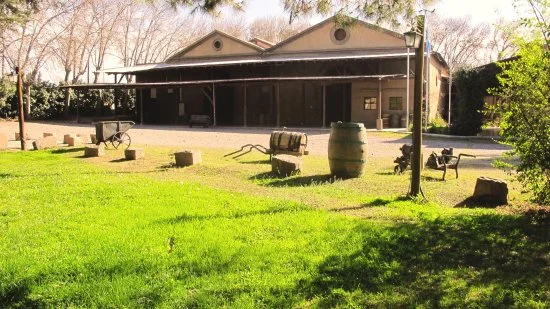

TOUR MAIPU POPULAR

Descripcion
La primer zona vitivinicola de Argentina. Es aquí, en esta modesta región donde se ubica la mas rica historia del vino de argentina, fue elogiada por los inmigrantes europeos que pretendía conservar una de sus tradiciones familiares mas emocionantes: La elaboración del vino. La cuna del vino.
ITINERARIO
BODEGA TRAPICHE VISITA Y DEGUSTACION
Exploramos la tierra combinando tradición y tecnología para que descubras nuevas sensaciones en cada uno de nuestros vinos.
Olivícola LAUR visita y degustación
Una de las olivícolas mas premiadas y los aceites mas deseados del mundo

BODEGA ALANDES (almuerzo )
Menú de pasos , en cada plato una minuciosa atención y una dedicación especial, harmonizada con vinos de Karim Mussi
TOUR BLEND DELICIOSA

Descripcion
Un Experiencia que te invita a experimentar el encanto del vino, la gastronomía y Aceites de Oliva, fusionados en una propuesta enoturística única.
ITINERARIO
BODEGA KRONTIRAS visita y degustación
Sumate a la sensación de vinos orgánicos, biodinámicos y naturales para entender asi la identidad del terroir
Olivícola LAUR visita y degustación
OLIVICOLA LAUR: fue pionera en la implantación de olivares en la provincia de Mendoza como así también en la elaboración de aceite de oliva deseados en todo el mundo
CASA VIGIL EL ENEMIGO
En el paraje de chachingo, se encuentra casa vigil. Una bodega que invita a experimentar un dia diferente, donde el encanto del vino se fusiona para presentar una propuesta enoturística única.